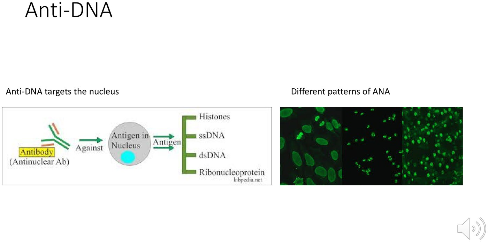

Rheumatology Investigations
- No rheumatology diagnosis is made by a blood test alone; there must be clinical features. The one exception: gout, by urate crystals in cells in synovial fluid.
- ANA: only order it if you suspect a connective tissue disease. ~1 in 3 women are ANA-positive; SLE is 1 in 1,000. A positive ANA means little; a negative ANA helps rule out SLE (sensitive, not specific). Never repeat a positive one, and don't repeat a negative one without new symptoms.
- Anti-dsDNA: only if the ANA is positive and you expect SLE. Specific but insensitive (~50% of SLE); tracks activity and lupus nephritis. ENA: only if ANA-positive (and best left to specialists). Complement: low in active lupus, but don't order it yourself.
- RF = an antibody (often IgM) against the Fc of IgG; seen in RA, CTDs, hepatitis C and healthy older people. Anti-CCP is fairly specific for RA. Both mark more severe, erosive RA. Ontario doesn't cover anti-CCP or ANCA: refer with what you see instead.
- ANCA only when you really suspect vasculitis. c-ANCA (PR3) is more often true vasculitis; p-ANCA (MPO) has more false positives. Both positive → think levamisole-cut cocaine.
Learning Objectives
- Develop a plan for appropriate investigations of a possible rheumatologic condition.
- Describe RF, ANA, ANCA, ESR, CRP and HLA-B27: when to order them and when ordering is inappropriate.
- Describe the expected results in RA, SLE, seronegative arthropathies, JIA and GCA/PMR.
A 26-minute module by Dr. Janet Pope (rheumatology): text sections on RA, CTD and vasculitis tests plus one 8-minute recording, “Lab tests for Connective Tissue Diseases.” The “expected results” table at the end pulls ESR/CRP, HLA-B27 and the Week 11 diseases together from 11.3–11.8.
Rheumatoid Arthritis Tests
RF, anti-CCP and the markers of inflammation.
RF and Anti-CCP
| Rheumatoid factor (RF) | Anti-CCP (an ACPA) | |
|---|---|---|
| What it is | An autoantibody (often IgM) against the Fc portion of IgG: an antibody against an antibody | Anti-cyclic citrullinated peptide: the commonest test for antibodies against citrullinated proteins |
| Seen in | RA, connective tissue diseases, hepatitis C, healthy older people | RA (common) |
| Specificity | Not specific for RA | Fairly specific for RA (not totally) |
| Prognosis | More severe RA: erosions, extra-articular disease, interstitial lung disease, nodules | More severe RA: erosions |
| Order it? | When you suspect RA | Not unless you suspect RA; not reimbursed in Ontario |
Better than ordering anti-CCP: a referral that says “I suspect early RA: swelling in the wrists, MCPs and PIPs, and stiffness across the MTPs.” Inflammatory conditions also show ↑ ESR, ↑ CRP and anemia of chronic disease.
Connective Tissue Disease Tests
ANA, anti-DNA, ENA and complement.
ANA: The Most Over-Ordered Test
Antinuclear antibodies bind antigens in the nucleus: a loss of self-recognition.
| The numbers | So… |
|---|---|
| ~1 in 3 women (a bit fewer men) have a positive ANA SLE, the commonest CTD, is 1 in 1,000 women; RA is 1 in 100 ANA is ordered 10× more than RF → ~100× too often | Most positives are false positives. A positive ANA causes angst, unnecessary referrals and more tests. |
| ANA pearls |
|---|
| Don't order it unless you suspect an autoimmune CTD |
| A positive ANA does NOT make a diagnosis |
| A negative ANA helps rule out SLE (sensitive, not specific) |
| Once positive, repeating it is a waste; a positive at any time counts toward the SLE criteria. Don't follow the titre. |
| If negative, don't repeat unless there are new symptoms or signs of a CTD |
| Titre: the higher the denominator, the stronger (doubling dilutions: 1:40 cut-off, 1:80 slightly positive … 1:1280 strong). A strong positive matters more than a borderline one. |
| Pattern: speckled and homogeneous are common and unhelpful; peripheral (rim), nucleolar, centromere are less common and possibly more helpful. The pattern can change with dilution. |
Should I Order an ANA?
| Patient | ANA? |
|---|---|
| 88-year-old man, low WBC from myelodysplastic syndrome, no lupus features | No |
| 32-year-old woman, fatigue and widespread pain (fibromyalgia) | No |
| 54-year-old woman, weight loss, new rash in the sun, high CK, new weakness | Yes (dermatomyositis) |
| 17-year-old, recurrent oral ulcers, hair loss, leukopenia, thrombocytopenia | Yes (SLE) |
| 44-year-old, new glomerulonephritis (RBC casts, proteinuria), cause unknown | Yes / maybe |
| Negative ANA a year ago, no new symptoms: repeat? | No |
| 22-year-old woman, low WBC, lymphopenia, low platelets, malar rash, hair loss: order anti-DNA? | No: ANA first, and anti-DNA only if it's positive |
Anti-dsDNA

Double-stranded DNA is only in the nucleus, so anti-DNA can't be positive without a positive ANA.
| Feature | Anti-dsDNA |
|---|---|
| Order when | ANA positive and you expect SLE |
| Specificity | Highly specific for SLE (but modern kits also pick up single-stranded DNA and noise, so less specific than the old labour-intensive assay) |
| Sensitivity | Insensitive: positive in only ~50% of SLE, so a negative doesn't rule SLE out (a negative ANA does) |
| Correlates with | Disease activity and lupus nephritis; often high in active disease and may turn negative after treatment |
ENA (Extractable Nuclear Antigens)
The lab screens positive or negative; if positive, it identifies which antibody. If the ANA is negative, don't order an ENA, and unless you're a specialist you may struggle to interpret it. Many kit antibodies are irrelevant noise.
| Antibody | Goes with |
|---|---|
| Anti-Ro (SSA) ← learn this one | SLE with rash and photosensitivity; Ro + La together = Sjögren's; pregnant Ro-positive mothers are followed for congenital heart block (rare); babies may get neonatal lupus (very rare) |
| Anti-La (SSB) | Usually with Ro: Sjögren's |
| Anti-Sm (Smith) | Fairly specific for SLE (not in everyone) |
| Anti-RNP | Mixed connective tissue disease and SLE |
| Anti-Scl-70 (topoisomerase 1) | Scleroderma with interstitial lung disease |
| Anti-Jo-1 | Myositis with ILD (“a bad antibody to have”) |
| Anti-PM-Scl | Dermatomyositis–scleroderma overlap |
| Anti-RNA polymerase III | Scleroderma renal crisis |
Complement (C3, C4)
Low in active lupus, especially nephritis, and may track activity. Why low: autoantibodies bind tissue, activate complement, and it gets consumed (named because it “complemented” antibodies in killing bacteria). Can also be low from an inherited deficiency. A waste of money if you're not a specialist.
Vasculitis Tests
ANCA (Anti-Neutrophil Cytoplasmic Antibody)
| Pearl |
|---|
| Order only if you really suspect vasculitis; not reimbursed in Ontario |
| c-ANCA (cytoplasmic; antigen PR3, proteinase 3) is more likely to mean real vasculitis (GPA) |
| p-ANCA (perinuclear; antigen MPO, myeloperoxidase) has more false positives (MPA, EGPA) |
| p-ANCA and c-ANCA both positive → suspect cocaine-induced vasculitis: a reaction to the levamisole cut into nearly all cocaine |
| ANCA titres may vary with activity, but concordance is poor |
Full vasculitis workup in 11.7: rule out infection first, then urinalysis and chest x-ray in everyone.
Putting It Together
What each disease's labs look like.
Expected Results by Disease
| Disease | ESR / CRP | Antibodies and markers | Don't |
|---|---|---|---|
| RA | ↑; anemia of chronic disease | RF ± anti-CCP (both = worse erosive disease); a seronegative RA exists | Order anti-CCP without suspecting RA |
| SLE | ESR ↑, CRP often normal (CRP ↑ suggests infection or serositis) | ANA + (negative essentially rules out); then anti-dsDNA, anti-Sm; low C3/C4 when active; cytopenias | Anti-DNA or ENA before a positive ANA |
| Seronegative SpA (AS, PsA, reactive) | Normal or ↑ | RF and anti-CCP negative; HLA-B27 supports AS (~90% of white patients with AS) but 8% of the population carries it | Use HLA-B27 as a screening test for back pain |
| JIA | ↑ in systemic and polyarticular; can be normal in oligo | ANA + = higher uveitis risk (not diagnostic); RF+ poly behaves like adult RA; HLA-B27 in enthesitis-related | Use the ANA to diagnose JIA |
| GCA | ESR and CRP high; both normal essentially rules it out (< 2%) | No antibody; anemia, thrombocytosis; temporal artery biopsy or ultrasound | Wait for results before prednisone |
| PMR | High | No antibody; anemia, thrombocytosis (not thrombocytopenia); CK normal | Treat raised markers alone |
| Fibromyalgia | Normal | None; ANA not indicated | Order an ANA (12.5) |
Practice Patients
1. A family doctor orders an ANA on a tired 30-year-old woman with no other findings. It comes back 1:80 speckled.
Answer
Almost certainly a false positive (1 in 3 women). Don't repeat it, don't chase anti-DNA/ENA, don't refer for a weak positive ANA alone. It should not have been ordered.
2. An SLE patient's anti-dsDNA rises and C3/C4 fall; urinalysis shows protein and blood.
Answer
Active lupus, likely nephritis: anti-DNA and low complement track activity and renal disease. Urgent rheumatology / nephrology; high-dose steroid territory (12.1).
3. A 34-year-old with purpura, sinusitis and hematuria is both p-ANCA and c-ANCA positive.
Answer
Ask about cocaine: double positivity suggests levamisole-induced vasculitis.
4. A pregnant woman with Sjögren's is anti-Ro positive. What does the obstetric team watch for?
Answer
Congenital heart block in the fetus (rare) and neonatal lupus in the baby (very rare).
Built from Dr. Janet Pope's module text (RA, CTD and vasculitis sections), her deck “Lab tests for Connective Tissue Diseases” and its 8-minute recording. The “Expected Results” table adds Week 11 content (11.3, 11.4, 11.5, 11.7, 11.8 and 12.5) to answer the module objective; the “SLE CRP often normal” point is standard teaching, not from this module. Notes: the auto-captions turn “ANA” into “RNA” and “DNA” throughout; the page follows the slides. The module text calls the ENA section “Pearls re anti-DNA” by mistake.